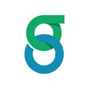
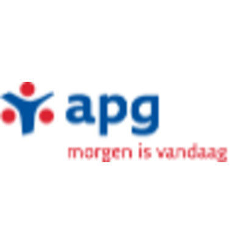
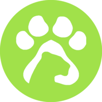
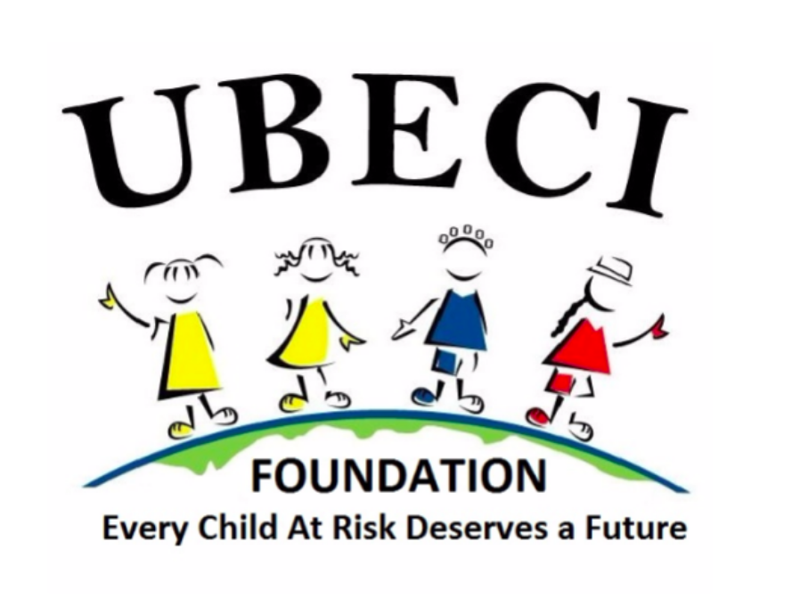

Hi my name is Ryan Poonolly. I’m a full stack engineer with over 5 years of industry experience.
I was previously a Technical Lead at Honest Buildings (a real estate tech startup) & a Tech Analyst at Goldman Sachs.
For the last 6 months I’ve been fulfilling a lifelong dream of volunteering & travelling around the world.
Thus far I’ve been to South America, Europe, & Southeast Asia
Honest Buildings

Senior Software Engineer & Technical Lead
Goldman Sachs

Technical Analyst
Goldman Sachs
Summer Analyst
Guardian Life

Applications Intern
APG

Operations Intern
The Green Lion

Volunteer
UBECI

Volunteer
close
Honest Buildings
Honest Buildings is a asset management platform used by some of the largest real estate owners in the industry.
Our clients included companies such Brookfield, WeWork, SL Green Realty, Beacon Capital Partners, etc.
I initially joined HB in early 2015. During this time I mostly worked as an individual contributor delivering several
high impact projects such as our primary user dashboard, our permissions sytem, invoicing, cost tracking, vendor managment, etc.
Over the next 3 years the company would grow from ~15 to over 100 people. Being apart of HB during this period of growth
was an incredibly valuable experience. I learned a lot about how to scale both a business & a team up.
As the team grew, I was given the opportunity to lead a squad composed of 1 product manager, 1 designer, 2 on-site engineers,
& 3 remote contractors. My responsibilities as Technical Lead included planning sprints/quarterly roadmaps,
negotiating deadlines with our clients, thinking through technical architecture, and breaking down large complex projects
into clear tasks for our engineers.
While I was incredibly proud of everything me & my team had accomplished during my time at HB,
it had always been a lifelong ambition of mine to travel. Because the company was in a relatively stable
place, I decided it was the best time to leave.
I spent my last few months at HB worked closely with my managers & with senior leadership to
slowly transition myself off my team and train a replacement.
close
Goldman Sachs
I joined Goldman Sachs after graduating college. I had previously worked there as an intern & was given a return offer at the end of the summer.
At GS my team's role was to calculate firmwide exposure to counterparty default (i.e. counterparty risk).
Basically this meant we were answering the question: "if 'CompanyX' goes bankrupt how much money could the firm as a whole lose?".
Different GS trading desks would then be charged a fee based on how much counterparty risk they carry
& the money from this fee would be used to hedge their positions.
My role at GS was to support the processes that ran these calculations & support the traders hedging against this form of risk.
close
Goldman Sachs
I was an intern at Goldman Sachs during the summer of 2012.
My internship project involved building a platform for digitizing the terms of differnt legal aggreements & ensuring that differnt
departments in GS have common interpretations of these legal terms.
During my time here I was mostly working with a GS proprietary technology called "SecDb". SecDb was a globally distributed graph database
used throughout the firm. The language used to interact with SecDb was called "Slang" & this what most of my development was done in.
At the end of my summer internship I was given an offer to return as a full time employee.
close
Guardian Life
I was an intern at Guardian Life Insurance during the summer of 2011.
During this time I built features for a web application used by Guardian agents to manage insurance policies.
Using Spring, IBM DB2, & jQuery I built components for managing alerts, reminders, and comments.
close
APG
I was an intern at APG Asset Managment during the summer of 2010.
My project at APG involved understanding legacy SAP processes and documenting them for auditors & trainees.
close
The Green Lion
The Green Lion is a NGO based all over Southeast Asia. I was a volunteer at their office in Ho Chi Minh, Vietnam from February to March of 2019.
During my time as a volunteer I taught English at a local university, worked at a soup kitchen, & delivered food to a hospital.
close
UBECI
UBECI (United to Benefit Ecuadorian Children International) is a NGO based in Ecuador. UBECI's mission is to improve the lives of
impoverished children living & working in street markets by providing free educational, medical, and dental services.
I was a volunteer at UBECI from November to December of 2018. During my time at UBECI I was mostly working at the NGO offices
helping them to build a website & also running marketing campaigns for a Christmas fundraisor.
I also had the opportunity to visit a small make-shift day care class they were running for a day to see the street markets first hand.
Pigeon RTC

A whimsical pigeon based video chat application. Created as an April Fools day joke :)
Build with:
WebRTC, React, & Material-UI
Website
Github
Pokerchip Counter

A Android app for tracking pokerchips in a poker game
Build with:
React Native
Expo
Github
NYC DOB ETL

A ETL pipeline for scraping permits from the NYC department of buildings website.
Build with:
AWS Lambda, Java, Jsoup, & Redshift
Github
Task Graph

A simple app for creating & organizing tasks & subtasks.
Build with:
Angular2 & Angular Material
Website
Github